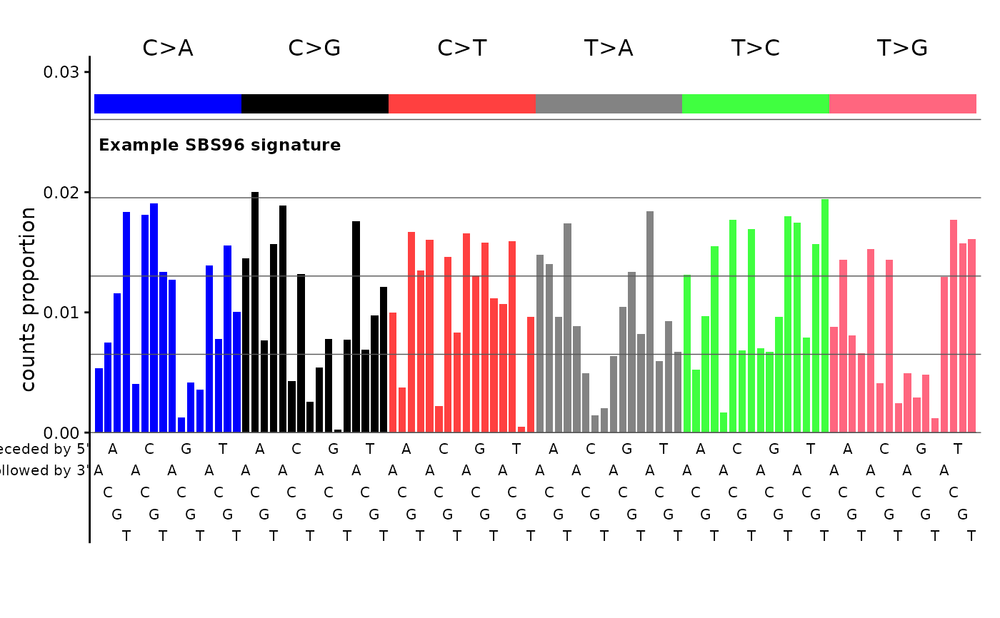

Creates a 96-bar chart showing single base substitution counts or proportions, organized into 6 mutation classes (C>A, C>G, C>T, T>A, T>C, T>G) of 16 bars each.
Usage
plot_SBS96(
catalog,
plot_title = NULL,
grid = TRUE,
upper = TRUE,
xlabels = TRUE,
ylabels = TRUE,
ylim = NULL,
base_size = 11,
title_cex = 0.8,
count_label_cex = 0.9,
class_label_cex = 1.1,
x_label_cex = 0.7,
axis_title_cex = 1,
axis_text_cex = 0.8,
show_counts = NULL
)Arguments
- catalog
Numeric vector, single-column data.frame, matrix, tibble, or data.table.
- plot_title
Character. Title displayed above the plot.
- grid
Logical, draw grid lines.
- upper
Logical, draw colored class rectangles and labels above bars.
- xlabels
Logical, draw x-axis base context labels.
- ylabels
Logical, draw y-axis labels.
- ylim
Optional y-axis limits.
- base_size
Numeric. Base font size in points.
- title_cex
Numeric. Multiplier for the plot title size.
- count_label_cex
Numeric. Multiplier for per-class count labels.
- class_label_cex
Numeric. Multiplier for major class labels (C>A, etc.).
- x_label_cex
Numeric. Multiplier for x-axis base labels.
- axis_title_cex
Numeric. Multiplier for the y-axis title size.
- axis_text_cex
Numeric. Multiplier for the y-axis tick label size.
- show_counts
Logical or NULL. If
TRUE, always display per-class count labels. IfFALSE, never display them. IfNULL(the default), display them only when the catalog contains counts (sum > 1.1).
Examples
# Plot a random SBS96 signature (proportions summing to 1)
set.seed(1)
sig <- runif(96)
sig <- sig / sum(sig)
names(sig) <- catalog_row_order()$SBS96
plot_SBS96(sig, plot_title = "Example SBS96 signature")
